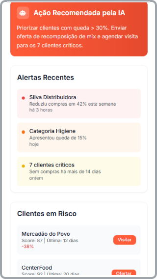
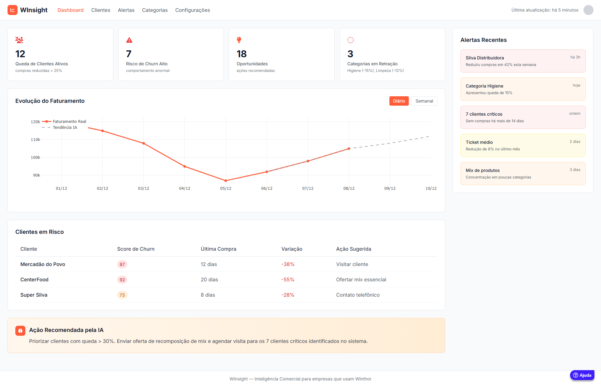

Pare de descobrir perda de faturamento tarde demais.
O WInsight monitora seu Winthor, detecta quedas críticas de vendas e avisa antes que o prejuízo aconteça — com insights claros e prontos para ação.
O Risco Invisível no seu Winthor
Todos os dias, empresas que usam Winthor perdem faturamento sem perceber. Vendas caem por cliente, região, mix ou vendedor — e o gestor só descobre quando o estrago já está feito.
Queda Silenciosa
Queda silenciosa de compras por clientes importantes e redução do mix de produtos.
Demora na Ação
Lentidão para identificar as causas reais, resultando em ações tardias e prejuízo invisível.
Falta de Visibilidade
Decisões demoradas por falta de visibilidade atualizada e dependência de relatórios complexos.
Inteligência Comercial Imediata
O WInsight conecta-se ao seu Winthor e transforma dados brutos em inteligência comercial imediata.
Detecção Precoce de Quedas
Detecte quedas de vendas de forma precoce, antes que afetem suas metas.
Alertas Automáticos Inteligentes
Receba alertas automáticos via e-mail ou WhatsApp, focando em clientes e categorias críticas.
Recomendações Prontas (IA)
Corrija a rota com recomendações inteligentes baseadas em IA, sem depender de relatórios complexos.

Quem usa Winthor precisa disso?
O Winthor entrega dados, mas não entrega inteligência antecipatória. O WInsight complementa seu ERP com:
- • Visão integrada do comportamento dos clientes
- • Alertas automáticos 24/7
- • IA para detectar padrões anormais de forma precoce
- • Interfaces simples para gestores não técnicos
O WInsight é para sua empresa?
Nossa solução é feita sob medida para empresas que usam o Winthor e buscam máxima eficiência comercial:
Painel Intuitivo do WInsight
Visualize alertas, análises e recomendações em um painel intuitivo, projetado para gestores que buscam ação rápida e eficaz.

Benefícios e Diferenciais que Geram Resultados
Antecipação de Problemas
Identifique quedas de vendas antes que virem churn, evitando perda de faturamento invisível.
Ações Rápidas e Baseadas em Dados
Recomendações prontas com inteligência artificial para corrigir a rota imediatamente.
Feito para Winthor
Integração nativa com parâmetros e métricas do seu ERP, sem alterações estruturais.
Implementação Rápida
Instalação sem complexidade, preservando a integridade e estabilidade do seu ERP.
Veja o WInsight em Ação
Descubra como transformamos dados do Winthor em inteligência comercial
Perguntas Frequentes (FAQ)
Pronto para ver a queda de faturamento antes que ela aconteça?
Preencha o formulário e solicite uma demonstração exclusiva do WInsight.